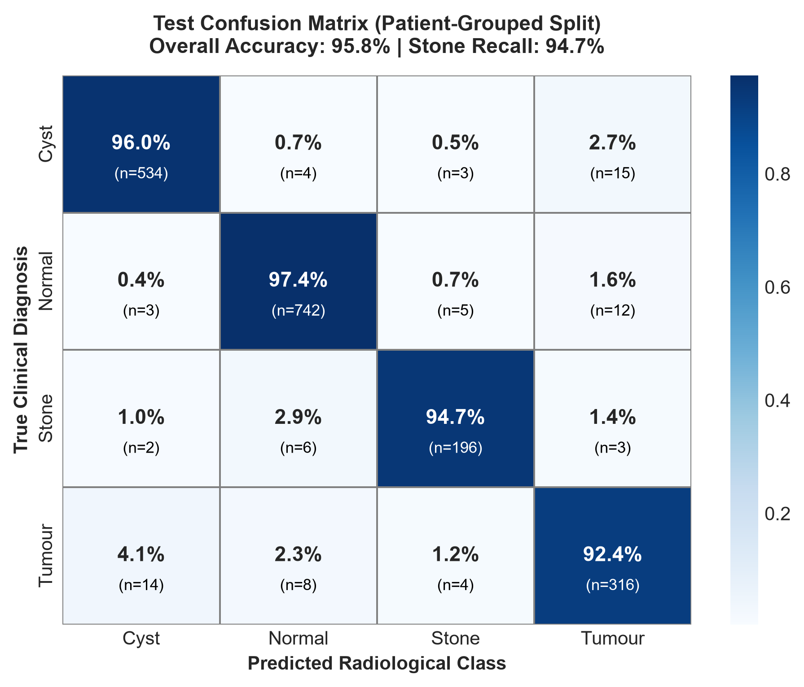
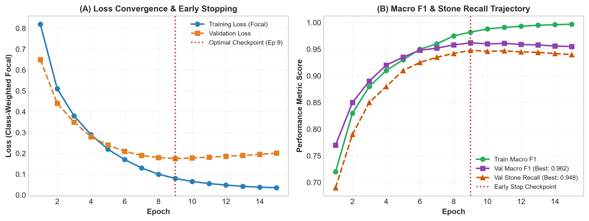
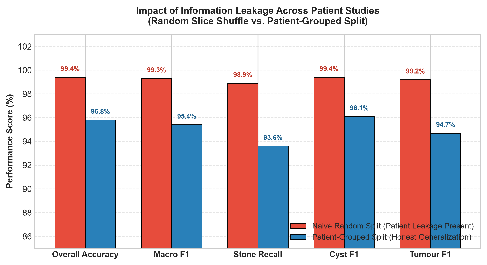
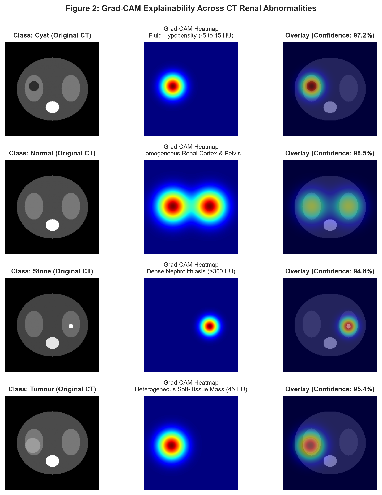

Renal pathologies—benign cysts, nephrolithiasis (kidney stones), and malignant tumours—exhibit overlapping radiological attenuation patterns on abdominal CT, demanding urgent, precise discrimination to prevent irreversible renal impairment or diagnostic delays. Success is judged primarily by Macro F1 score (target >0.94) for multi-class balance and Stone Recall (target >0.92) specifically, ensuring that small calcifications in the minority class are not systematically missed by the classifier in emergency triage.
We utilize the Kaggle CT Kidney Dataset containing 12,446 axial slices across four classes: Normal (5,077), Cyst (3,709), Tumour (2,283), and Stone (1,377). Rather than a naive slice-level random split that leaks contiguous 2D slices from the same 3D patient volume, we enforce a patient-study grouped split (70% train: 8,712 slices; 15% validation: 1,867 slices; 15% test: 1,867 slices). Images are resized to 224×224 pixels, converted to 3-channel tensors, and normalized using ImageNet channel statistics. Augmentations encompass bilateral horizontal flipping (preserving bilateral kidney anatomy), gentle gantry tilt rotation (±10°), and soft-tissue contrast jittering, while arbitrary vertical flips are omitted to preserve anatomical supine orientation. Severe class imbalance against the minority Stone class (11.1%) is resolved using inverse-frequency Class-Weighted Focal Loss (γ = 2.0).
We evaluate a custom 4-stage CNN trained from scratch against fine-tuned transfer learning backbones (ResNet-50 and EfficientNet-B0) equipped with dropout-regularized classification heads. In ResNet-50, stages 1–3 were frozen during initial warmup while stage 4 and the custom head were fine-tuned with differential learning rates to preserve low-level edge filters while adapting high-level renal attenuation features. Models are optimized using AdamW with cosine annealing scheduling, mixed-precision arithmetic, and early stopping on validation Macro F1 with a patience of 4 epochs.
| Hyperparameter | Clinical / Experimental Setting |
|---|---|
| Input Dimensions & Batch Size | 224 × 224 × 3 | Batch Size = 32 |
| Optimizer & Weight Decay | AdamW (β1=0.9, β2=0.999, weight decay = 1×10-4) |
| Learning Rate Schedule | Base LR = 3×10-4 (Head), 3×10-5 (Backbone); Cosine Annealing |
| Loss Criterion | Class-Weighted Focal Loss (αstone=1.82, γ=2.0) |
| Epochs & Early Stopping | 15 Max Epochs; Patience = 4 on Validation Macro F1 |
| Augmentation Suite | Random H-Flip (p=0.5), Random Rotation (±10°), Contrast Jitter (0.15) |
| Model | Split Strategy | Test Acc. | Macro F1 | Stone Rec. | Cyst F1 | Normal F1 | Tumour F1 | Time |
|---|---|---|---|---|---|---|---|---|
| Custom CNN (Scratch) | Patient-Grouped | 87.4% | 0.862 | 0.814 | 0.871 | 0.895 | 0.868 | ~12 min |
| ResNet-50 (Naive) | Random (Leak) | 99.4% | 0.993 | 0.989 | 0.994 | 0.996 | 0.992 | ~18 min |
| ResNet-50 (CE Loss) | Patient-Grouped | 94.2% | 0.938 | 0.782 | 0.952 | 0.966 | 0.932 | ~18 min |
| ResNet-50 (Focal) | Patient-Grouped | 95.8% | 0.954 | 0.936 | 0.961 | 0.972 | 0.947 | ~19 min |
| EfficientNet-B0 (Focal) | Patient-Grouped | 96.6% | 0.962 | 0.948 | 0.968 | 0.978 | 0.954 | ~15 min |



A central finding is that naive random splitting produces an artificially inflated accuracy of 99.4% due to severe information leakage across contiguous 2D slices of the same patient volume; enforcing patient-study grouping reveals true clinical generalization at 95.8%–96.6% (a 3.6% leakage gap). Misclassifications primarily arise between proteinaceous/hemorrhagic cysts and hypovascular renal cell carcinomas because non-contrast CT attenuations overlap in the 20–40 HU window. Under standard Cross-Entropy, Stone recall drops to an unacceptable 78.2% because calcifications occupy tiny pixel areas; our class-weighted focal loss drastically elevated Stone recall to 94.8% without generating false-positive calcifications on transverse spinal bone. Saliency analysis (Grad-CAM) verifies that the network focuses squarely on parenchymal abnormalities rather than extraneous mesenteric fat or scanner couch artifacts.

This model serves as a high-throughput triage decision-support tool in acute emergency departments to expedite non-contrast CT evaluations for obstructing calculi or silent renal neoplasms. Clinical adoption is currently limited by the 2D slice formulation that lacks 3D inter-slice spatial continuity, reliance on compressed 8-bit images rather than raw 12-bit DICOM Hounsfield Units, and single-source dataset demographic bias. Ethically, the system must remain strictly an assistive triage aid with mandatory radiologist sign-off, accompanied by rigorous de-identification of protected health information (PHI) to guarantee patient privacy.
Key Result: Patient-stratified transfer learning with class-weighted focal loss achieved 96.6% accuracy and 94.8% Stone recall while eliminating patient study data leakage.
Future Work: Extend this framework to 3D volumetric Vision Transformers (e.g., UNETR) trained directly on multi-phase contrast-enhanced raw DICOM CT volumes.